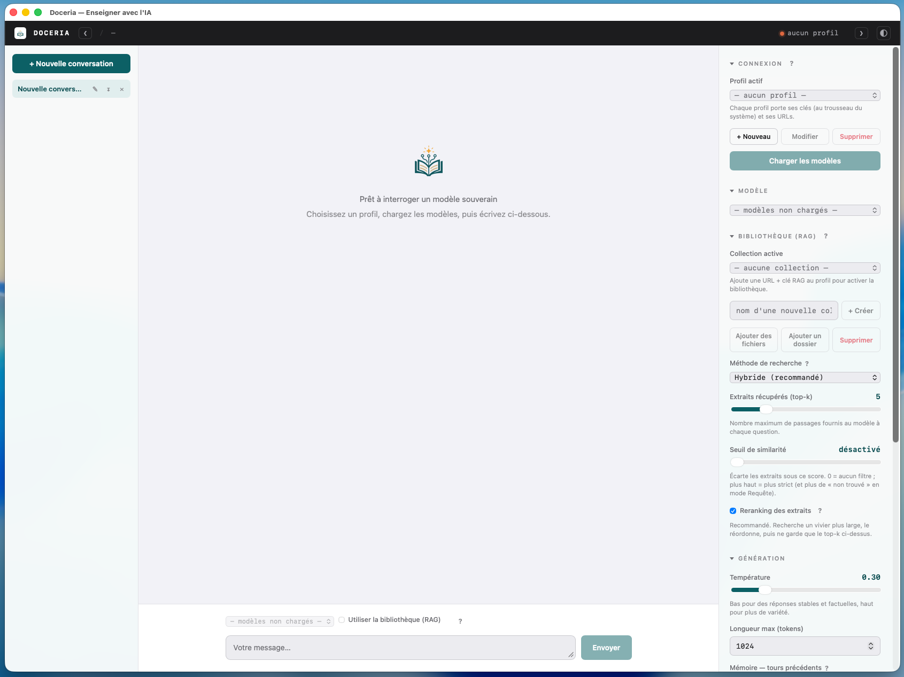
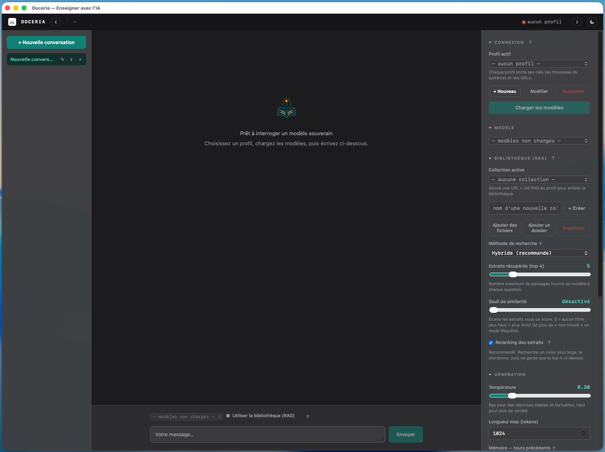
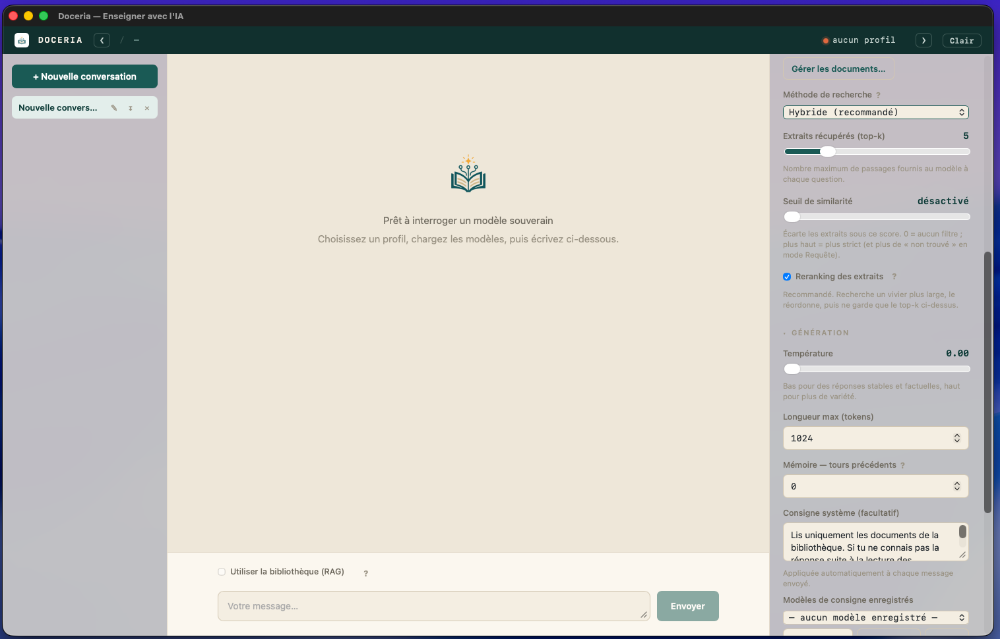

Enseigner avec l'IA.
Une application de bureau native et souveraine pour interroger l'API ILaaS — la fédération d'inférence de l'enseignement supérieur et de la recherche — et dialoguer avec vos propres documents. Pensée pour les enseignants, conçue avec soin.
Apple Silicon · application non signée (voir l'installation)
Doceria interroge des modèles hébergés dans le périmètre souverain de l'ESR (pas un cloud américain), avec un rendu natif léger. Le chat sort de votre machine ; vos clés restent au trousseau du système et ne touchent jamais la page web.
Doceria, de docere, enseigner. La racine latine qui a donné docteur, didactique et document, prolongée par l'IA et par le suffixe des lieux de savoir.
Un atelier où l'on enseigne avec l'intelligence artificielle, à partir de ses propres documents.
Réponses au fil de l'eau, bouton Stop, multi-conversations (créer, renommer, exporter en Markdown). Mémoire ajustable : choisissez le nombre de tours d'historique envoyés.
Bibliothèque de collections privées (RAG géré ILaaS) : ajoutez fichiers ou dossiers, posez vos questions, obtenez des réponses avec citations des sources. Modes Chat ⇄ Requête (réponse strictement fondée sur vos documents) et réglages de récupération (méthode, nombre d'extraits, seuil).
Profils multiples à deux jetons (inférence + RAG), stockés dans le trousseau du système. Jamais en clair, jamais dans le webview.
Charte « Atelier » chaleureuse, mode clair/sombre/auto qui suit le système, translucidité native macOS.
Chargez ponctuellement un PDF, DOCX, Markdown, CSV… pour cadrer une conversation, sans rien indexer.
Construit avec Tauri (Rust + webview système) : ~13 Mo, démarrage instantané, double-clic, sans terminal.
L'inférence passe par ILaaS, la fédération souveraine de l'ESR (tutelle MESR). Le RAG s'appuie sur OpenGateLLM (DINUM/Etalab) : vos documents sont indexés dans des collections privées sur l'infrastructure ESR, jamais sur un cloud tiers.
Doceria s'inspire des bons outils de RAG de bureau (comme AnythingLLM), mais assume des choix différents, pensés pour l'enseignement supérieur souverain et la simplicité côté enseignant.
Bâti pour ILaaS / OpenGateLLM (ESR, tutelle MESR) : données et vecteurs restent dans le périmètre ESR. Les outils agnostiques, eux, laissent la souveraineté dépendre de votre configuration.
Liez une collection à un dossier : Doceria ajoute les nouveaux fichiers, met à jour les modifiés et retire ceux supprimés — tout le dossier, à la demande ou à l'ouverture du profil. Là où d'autres ne suivent qu'un fichier à la fois.
Tauri (webview système + cœur Rust) plutôt qu'Electron : ~13 Mo, démarrage instantané, vibrance macOS. Et vos clés vivent dans le trousseau du système, pas dans un fichier de l'app.
Zéro télémétrie : rien ne sort vers un tiers, par défaut et sans réglage à activer. Une interface en français, centrée sur « enseigner avec l'IA », sans Docker ni base vectorielle à configurer.
En toute honnêteté, des solutions comme AnythingLLM sont plus riches sur d'autres terrains (agents, connecteurs multiples, multi-utilisateur). Doceria, lui, vise la souveraineté ESR, la simplicité et un flux documentaire sans friction.



Un bon outil dit aussi ce qu'il n'est pas (encore).
Téléchargez le .dmg et glissez Doceria dans Applications.
1ᵉʳ lancement : clic droit → Ouvrir (ou Réglages → Confidentialité et sécurité → « Ouvrir quand même »).
Créez un profil, collez votre clé ILaaS, et c'est parti.
mistral-medium-latest.